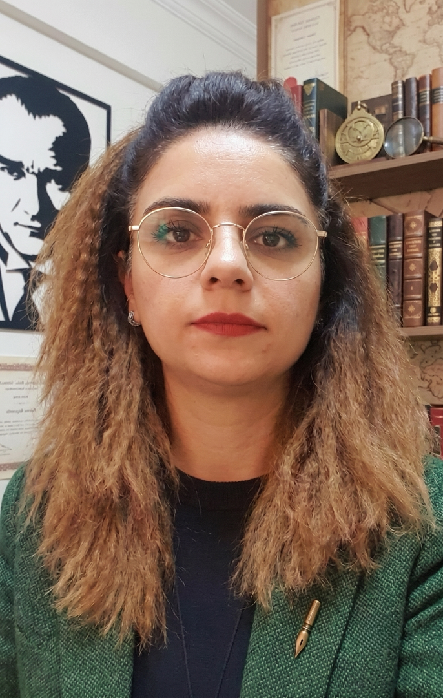

Atatürk Üniversitesi · Özel Eğitim Bölümü
Otizm Spektrum Bozukluğu, erken çocukluk özel eğitimi ve dil-iletişim becerileri üzerine araştırmalar yürütüyorum.

Atatürk Üniversitesi Kâzım Karabekir Eğitim Fakültesi Özel Eğitim Bölümü'nde Bölüm Başkanı ve Anabilim Dalı Başkanı olarak görev yapmaktayım.
Araştırmalarım, otizm spektrum bozukluğu olan çocukların söz öncesi iletişim becerileri, anne yanıtlayıcılığı, oyun gelişimi ve okula uyum süreçleri üzerine yoğunlaşmaktadır. Bu alanda boylamsal çalışmalar yürütmekte ve ölçek uyarlama/geliştirme çalışmalarına katkıda bulunmaktayım.
Atatürk Üniversitesi, Kâzım Karabekir Eğitim Fakültesi, Özel Eğitim Bölümü
Aydın Adnan Menderes Üniversitesi, Eğitim Fakültesi, Özel Eğitim Bölümü
Kafkas Üniversitesi, Eğitim Fakültesi, Eğitim Bilimleri Bölümü
Ankara Üniversitesi, Eğitim Bilimleri Fakültesi, Özel Eğitim Bölümü
Kafkas Üniversitesi, Eğitim Fakültesi, Özel Eğitim Bölümü
Ankara Üniversitesi
Eğitim Bilimleri Fakültesi, Özel Eğitim Bölümü
Okul öncesi dönemde sözel olmayan otizm spektrum bozukluğu tanılı çocukların söz öncesi becerilerinin gelişiminde anne yanıtlayıcılığının etkisinin boylamsal incelenmesi
Atatürk Üniversitesi
Kâzım Karabekir Eğitim Fakültesi, Temel Eğitim
Atatürk Üniversitesi
Kâzım Karabekir Eğitim Fakültesi, Temel Eğitim
PLOS ONE, cilt.21, sa.6 SCI-ExpandedScopus
International Journal of Developmental Disabilities, cilt.72, sa.3, ss.581-595 SSCIScopus
Journal of Research in Special Educational Needs, cilt.25, sa.4, ss.1036-1052 ESCIScopus
Noropsikiyatri Arsivi, cilt.62, sa.3, ss.249-255 SCI-ExpandedScopus
Research in Autism, cilt.123 SSCIScopus
Early Child Development and Care, cilt.189, sa.5, ss.777-791 SSCIScopus
Vize Akademi, Ankara
Pegem A Yayıncılık, Ankara
Pegem A Yayıncılık, Ankara
Pegem Akademi, Ankara
Alak G., Karabacak İlter A., Çatıma Z., İlerstürk D., Bayırak Karsli M., Dalgıdı A., Tıryaki E. E., Kaba E.
TÜBİTAK Projesi 2026Alak G., Taşgın A., Özhan M. B., Çiftçi M., Kaya Y.
TÜBİTAK Projesi, 3005 - Sosyal ve Beşeri Bilimlerde Yenilikçi Çözümler 2025 – 2026Geliştirme Proje Destekli Programı
BAP 2023 – 2025Atatürk Üniversitesi
Kâzım Karabekir Eğitim Fakültesi
Özel Eğitim Bölümü
Erzurum,
Türkiye